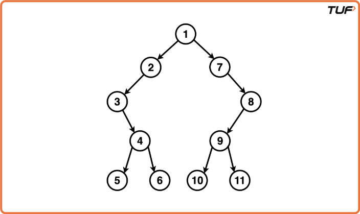
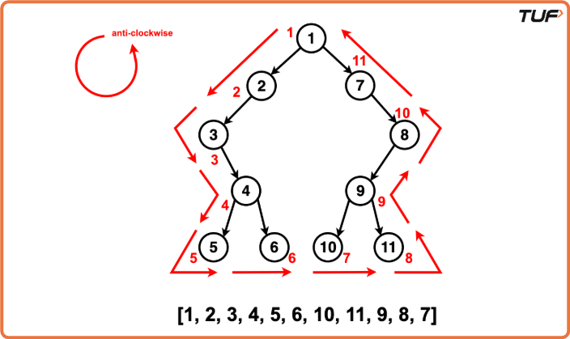
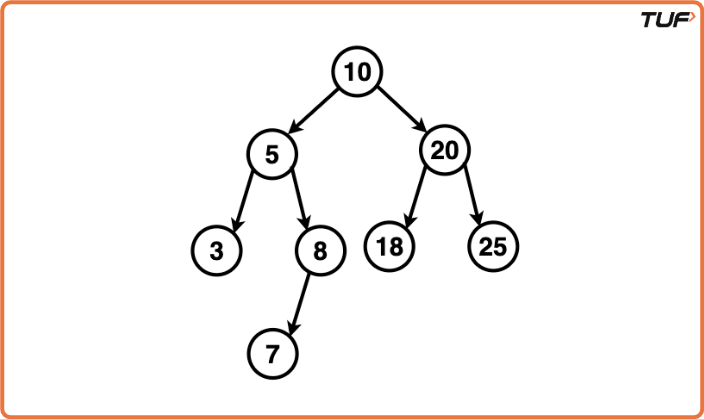
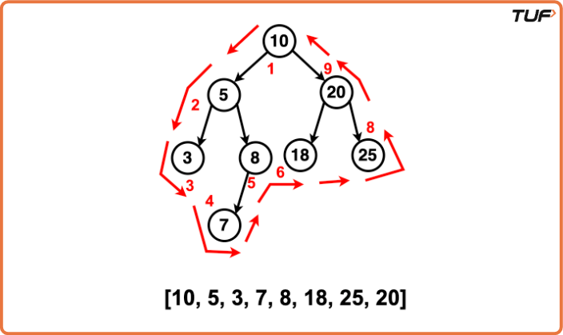
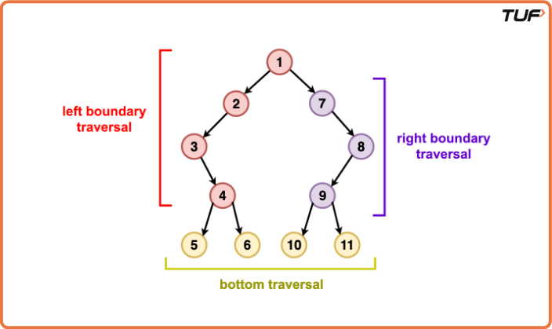
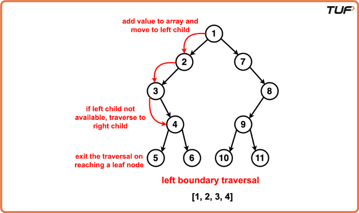
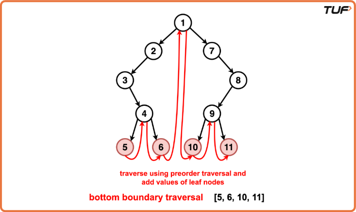
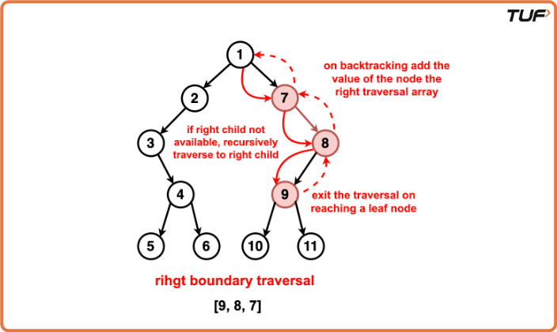

Boundary Traversal of a Binary Tree
Boundary Traversal of a Binary Tree .
Problem Statement: Given a Binary Tree, perform the boundary traversal of the tree. The boundary traversal is the process of visiting the boundary nodes of the binary tree in the anticlockwise direction, starting from the root.
Examples
Example 1: Input:Binary Tree: 1 2 7 3 -1 -1 8 -1 4 9 -1 5 6 10 11
Output: Boundary Traversal: [1, 2, 3, 4, 5, 6, 10, 11, 9, 8, 7] Explanation: The boundary traversal of a binary tree involves visiting its boundary nodes in an anticlockwise direction:Starting from the root, we traverse from: 1
The left side traversal includes the nodes: 2, 3, 4
The bottom traversal include the leaf nodes: 5, 6, 10, 11
The right side traversal includes the nodes: 9, 8, 7
We return to the root and the boundary traversal is complete.

Example-2 Input:Binary Tree: 10 5 20 3 8 18 25 -1 7 -1 -1
Output : Boundary Traversal: [10, 5, 3, 7, 8, 18, 25, 20] Explanation: The boundary traversal of a binary tree involves visiting its boundary nodes in an anticlockwise direction:Starting from the root, we traverse from: 10
The left side traversal includes the nodes: 5
The bottom traversal include the leaf nodes: 3, 7, 8, 18, 25
The right side traversal includes the nodes: 20
We return to the root and the boundary traversal is complete.

Disclaimer: Here is the practice link to help you assess your knowledge better. It's highly recommend trying to solve it before looking at the solution.
Approach
Algorithm
Intuition
The boundary traversal algorithm should be divided into three main parts traversed in the anti-clockwise direction:

Left Boundary: Traverse the left boundary of the tree. Start from the root and keep moving to the left child; if unavailable, move to the right child. Continue this until we reach a leaf node.
Bottom Boundary: Traverse the bottom boundary of the tree by traversing the leaf nodes using a simple preorder traversal. We check if the current node is a lead, and if so, its value is added to the boundary traversal array.
Right Boundary: The right boundary is traversed in the reverse direction, similar to the left boundary traversal starting from the root node and keep moving to the right child; if unavailable, move to the left child. Nodes that are not leaves are pushed into the right boundary array from end to start to ensure that they are added in the reverse direction.
Algorithm
- Initialise an empty array to store the boundary traversal nodes.
- Create a helper function to check if a node is a leaf. This is to avoid cases where there will be an overlap in the traversal of nodes. We exclude leaf nodes when adding left and right boundaries as they will already be added when in the bottom boundary.
- Initialise a recursive function `addLeftBoundary` and a vector to store the left traversal.
- Start from the root of the tree.
- Traverse down the left side of the tree until we reach a leaf node. For each non-leaf node, add its value to the result list.
- Traverse to its left child. If unavailable, call the recursion function to its right child.
- If the current node is a leaf, add its value to the result list.
- Recursively travel to the current nodes left and right subtrees in a preorder fashion.
- Implement a recursive function `addRightBoundary` and a vector to store the right traversal.
- Start from the root of the tree.
- Traverse to the right most side of the tree until we reach a leaf node.
- For each non-leaf node, call the recursive function to its right child; if unavailable, call to its left child.
- While the recursion backtracks, add the current node’s value to the result list.
Dry Run



Code
#include <iostream>
#include <vector>
using namespace std;
// Node structure for the binary tree
struct Node {
int data;
Node* left;
Node* right;
// Constructor to initialize
// the node with a value
Node(int val) : data(val), left(nullptr), right(nullptr) {}
};
class Solution {
public:
// Function to check
// if a node is a leaf
bool isLeaf(Node* root) {
return !root->left && !root->right;
}
// Function to add the
// left boundary of the tree
void addLeftBoundary(Node* root, vector<int>& res) {
Node* curr = root->left;
while (curr) {
// If the current node is not a leaf,
// add its value to the result
if (!isLeaf(curr)) {
res.push_back(curr->data);
}
// Move to the left child if it exists,
// otherwise move to the right child
if (curr->left) {
curr = curr->left;
} else {
curr = curr->right;
}
}
}
// Function to add the
// right boundary of the tree
void addRightBoundary(Node* root, vector<int>& res) {
Node* curr = root->right;
vector<int> temp;
while (curr) {
// If the current node is not a leaf,
// add its value to a temporary vector
if (!isLeaf(curr)) {
temp.push_back(curr->data);
}
// Move to the right child if it exists,
// otherwise move to the left child
if (curr->right) {
curr = curr->right;
} else {
curr = curr->left;
}
}
// Reverse and add the values from
// the temporary vector to the result
for (int i = temp.size() - 1; i >= 0; --i) {
res.push_back(temp[i]);
}
}
// Function to add the
// leaves of the tree
void addLeaves(Node* root, vector<int>& res) {
// If the current node is a
// leaf, add its value to the result
if (isLeaf(root)) {
res.push_back(root->data);
return;
}
// Recursively add leaves of
// the left and right subtrees
if (root->left) {
addLeaves(root->left, res);
}
if (root->right) {
addLeaves(root->right, res);
}
}
// Main function to perform the
// boundary traversal of the binary tree
vector<int> printBoundary(Node* root) {
vector<int> res;
if (!root) {
return res;
}
// If the root is not a leaf,
// add its value to the result
if (!isLeaf(root)) {
res.push_back(root->data);
}
// Add the left boundary, leaves,
// and right boundary in order
addLeftBoundary(root, res);
addLeaves(root, res);
addRightBoundary(root, res);
return res;
}
};
// Helper function to
// print the result
void printResult(const vector<int>& result) {
for (int val : result) {
cout << val << " ";
}
cout << endl;
}
int main() {
// Creating a sample binary tree
Node* root = new Node(1);
root->left = new Node(2);
root->right = new Node(3);
root->left->left = new Node(4);
root->left->right = new Node(5);
root->right->left = new Node(6);
root->right->right = new Node(7);
Solution solution;
// Get the boundary traversal
vector<int> result = solution.printBoundary(root);
// Print the result
cout << "Boundary Traversal: ";
printResult(result);
return 0;
}Complexity Analysis